商人の店製品版・開発中
取り立ての後に寄る店です。扉を開けて店へ入るカメラの流れ、布に映る商人の影、品物の売り買い、鍵のガチャの演出、部屋に落ちるコインと鍵、所持金（DC）での6項目の強化を作りました。
Game Portfolio
徳島大学大学院 創成科学研究科 理工学専攻
チームでのゲーム制作を中心に、遊びの手触りと、それを支える仕組みの両方を作っています。いまは4人チームで Steam タイトル『ODD ODDS』の製品版を開発しています。
物理演算 × ローグライク × ギャンブル（PC／Steam）
「物理演算 × ローグライク × ギャンブル」をテーマにした PC 向けのゲームです。悪魔への借金を返すため、クレーンゲーム（デビルキャッチャー）やピンボールでコインを稼ぎ、ターンの終わりにはタイプライターで強化を選びます。数ターンごとにやって来る悪魔の取り立てを乗り切りながら、完済を目指します。Steam でストアページと無料の体験版を公開中で、製品版は2026年10月末にリリース予定です。
主に、次の3つを担当しています。
取り立ての後に寄る店です。扉を開けて店へ入るカメラの流れ、布に映る商人の影、品物の売り買い、鍵のガチャの演出、部屋に落ちるコインと鍵、所持金（DC）での6項目の強化を作りました。
毎ターン強化を選ぶ、ゲームの中核の画面です。打たれた紙が燃える演出、アイテムショップ、使い方のチュートリアル、ブラックダイヤの売却の演出、5言語への対応までを担当しました。10月にはリロールと閉じるボタンを加えました。
タイトルの悪魔の会話、文字送りの音、3D のロゴのロード画面、ターンの切り替わりの演出を担当しました。複数のシーンを同時に読み込む作りで起きていた画面のちらつきを、8月に作り直して解消しました。
7セグメント風の残り時間、ブラウン管風の演出（走査線・揺れ・周辺減光・残光）、文字のホログラムのシェーダーを作りました。残り10秒で警告の色に変わります。色や強さを Inspector で変えるとその場で反映されるので、見た目の調整がしやすい作りです。
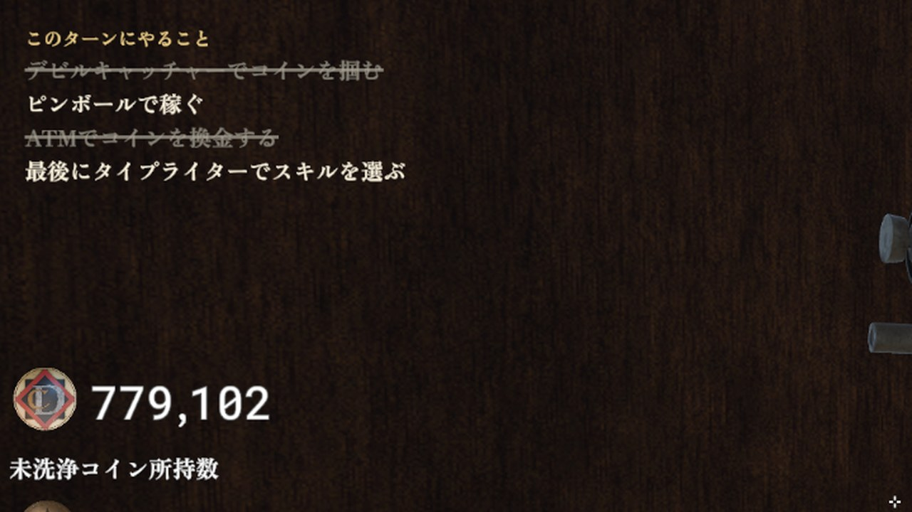
1ターンの手順（コインを掴む・ピンボールで稼ぐ・換金する・最後に強化を選ぶ）を画面の左上に出し、終わった項目に左から右へ線を引いて薄くします。部屋を歩ける時だけ表示し、5言語に対応しています。
動画の左：呪い／右：加護
ブラックダイヤの売却では、色・パネルの揺れ・ダイヤの沈み込み・コインが吸い上げられるか降り注ぐか・数字の動きなど6点で呪いと加護を対比させました。固定の矢印はどちらかの場面で向きが嘘になるため、コインの動きで向きを見せています。
悪魔が使い方を説明する11ステップのチュートリアルは、「タブを開く」「アイテムを選ぶ」などを実際に行うまで進みません。誘導先以外は押せないようにし、読みながら自然に覚えられる流れにしました。
鍵を差してクリックすると、錠前の歯が1つずつそろい、鍵穴の光の色が等級に応じて昇格していきます。等級が高いほど光・火花・コインの雨・花火と演出が重なり、開く瞬間まで期待が高まるようにしました。
「個数に比例」の式では、7個で所持金がすべて没収され、加護では際限なく増えていました。「1個ごとに掛ける」式に変え、何個持っても0にも無限にもならず、倍率の調整だけでバランスを取れるようにしました。
店の支払いには、取り立てにも使う所持金（DC）を使います。店の画面には次の取り立て額を常に出し、強化するか温存するかの駆け引きが生まれるようにしました。鍵はまれにしか手に入らないようにしています。
設定でテキスト速度を選べるようにし、会話中は押しっぱなしで早送りできるようにしました。長押しの判定時間でクリック（次へ進む）と早送りを区別し、誤って読み飛ばさないようにしています。会話の途中でも速度を切り替えられます。
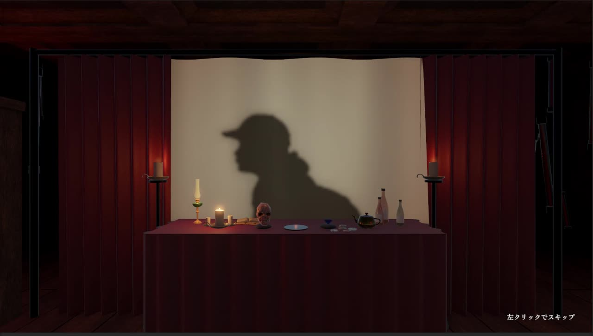
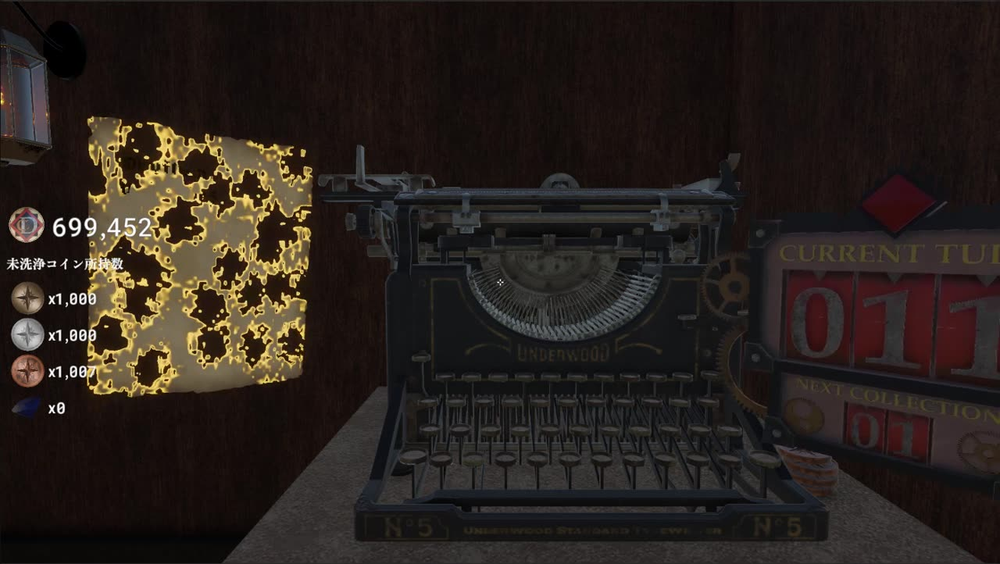
ネットワーク対戦かくれんぼ（C言語 + SDL2）
互いが鬼のかくれんぼです。2人対戦の2Dアクションで、先に相手を見つけて捕まえた方が勝ちになります。制限時間は180秒で、Joy-Con で操作します。企画から4名で考え、C言語と SDL2 で作りました。
描画処理と、キャラクター・ゲーム処理を担当しました。画面の初期化とタイトル・接続待ち・ゲーム・リザルトの各画面、キャラクターの描画、暗闇と視界の制限、画面の状態の切り替え、Joy-Con とキーボードの入力、移動と歩行アニメーションです。ネットワーク（TCP のクライアント・サーバー型）は、チームで一緒に作りました。
暗いマップでは、自分の向きの前方の範囲にいる相手だけが見えます。捕まえられる範囲も視界と同じにしたので、「見えている相手だけ捕まえられる」というルールが直感的に伝わります。
30秒ごとに雷が落ちて約1秒マップが明るくなり、視界の外の相手も見えます。チームが作った足音の表示と合わせて、見えない相手を探し、雷の瞬間を待って動く駆け引きが生まれます。
ゲーム以外も含め、作って動かしてきたものです。
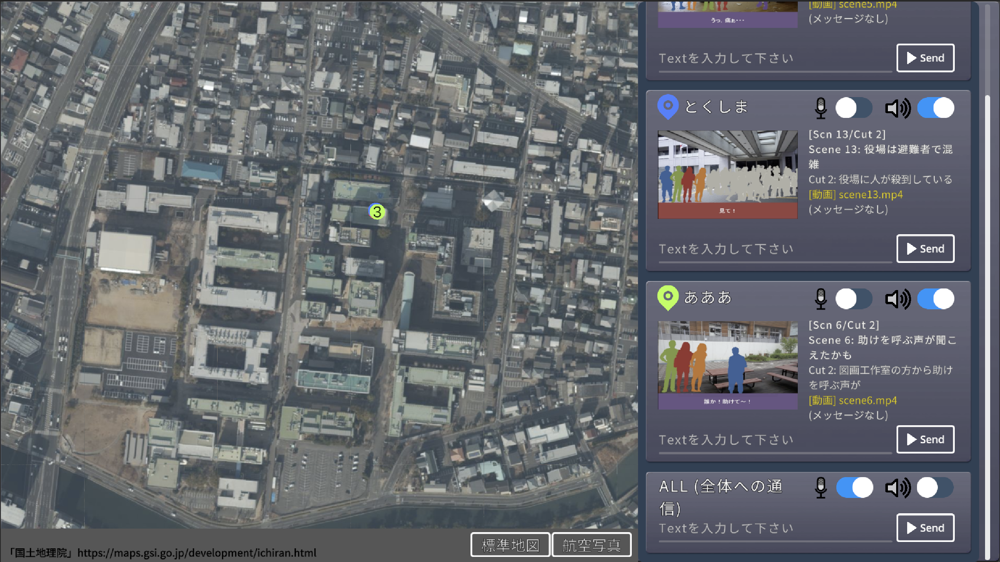
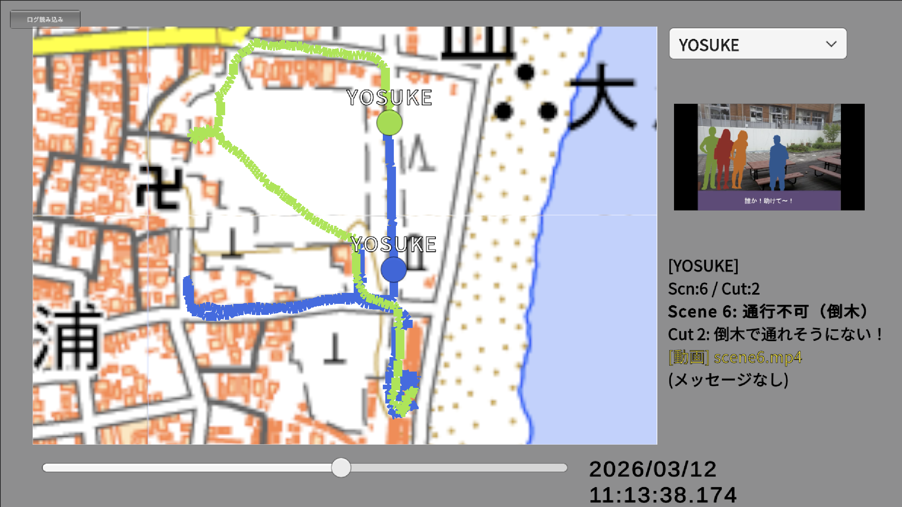
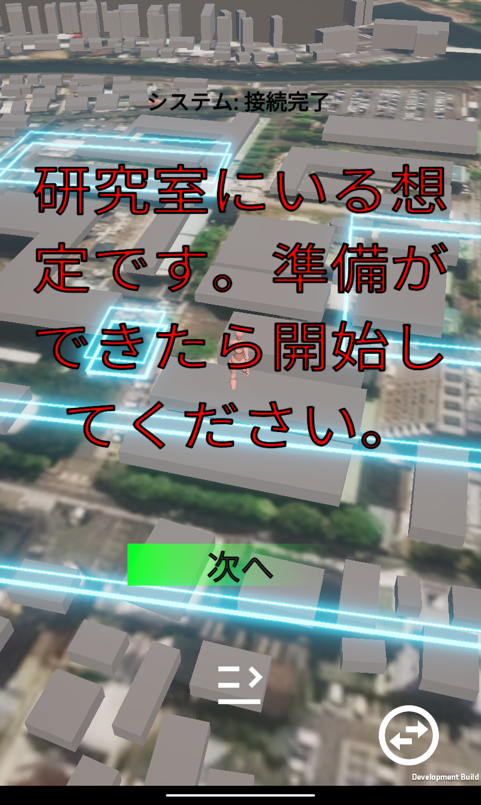
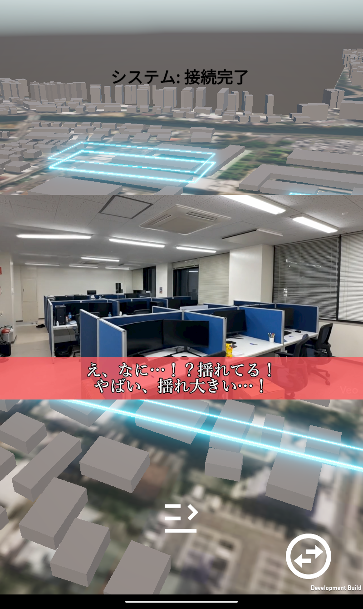
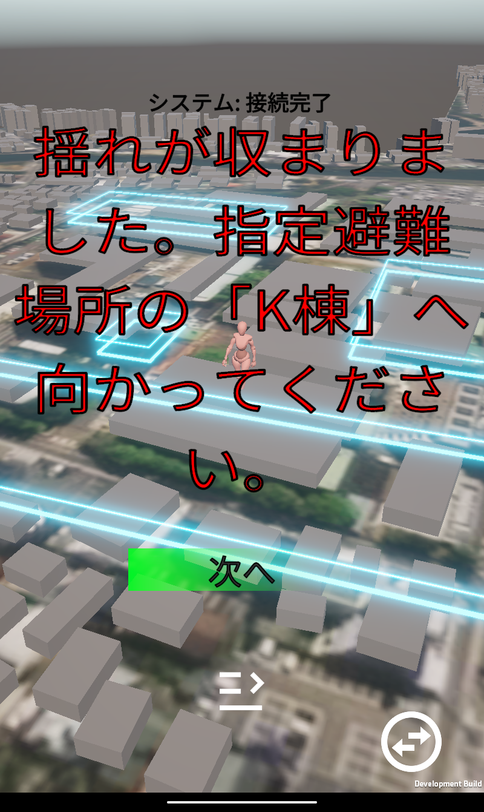
研究・Unity / C# / Photon
Yattosar は、GPS で地図上に仮想の境界を設定し、参加者がその場所に着いた時や決めた時刻になった時に、災害の映像や質問を自動で表示する避難訓練システムです。参加者は表示された状況を見て「進む・引き返す・高台へ」などを自分で判断し、選んだ行動によって物語が分岐します。
運用してみると、訓練中は管理者が参加者の位置や状況をつかめず、訓練後の振り返りも「どこを通ったか」の確認に時間を取られ、「なぜそう判断したか」の議論まで進めないという課題がありました。卒業論文と大学院の研究で、この2つを解決する仕組みを加えました。
地理院地図の上に全参加者の位置を表示し、参加者が今見ている映像を管理者の画面でも再現します。テキストのメッセージと音声通話で、その場で指示を出せます。
位置・場面・受け取ったメッセージなどの行動をすべて CSV に記録します。振り返りでは、地図の上に移動の軌跡を描き、タイムラインで好きな時刻を再現できます。
学生6名（3名×2グループ）で、モニタリングの有無を比べました。振り返りの発話のうち「状況確認」は 51.2% から 15.9% に減り、「原因の推定」と「改善策」は約15% から約57% に増えました。
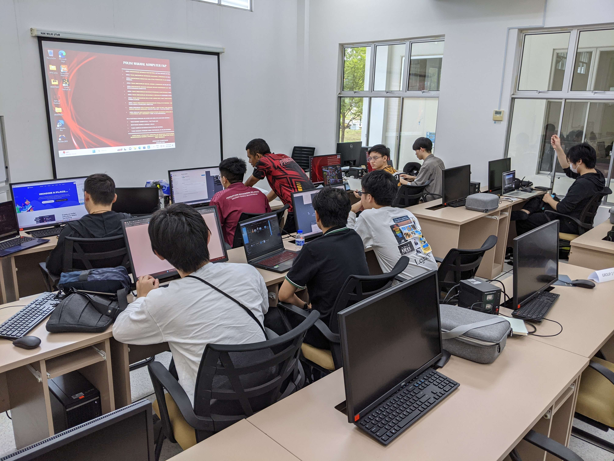
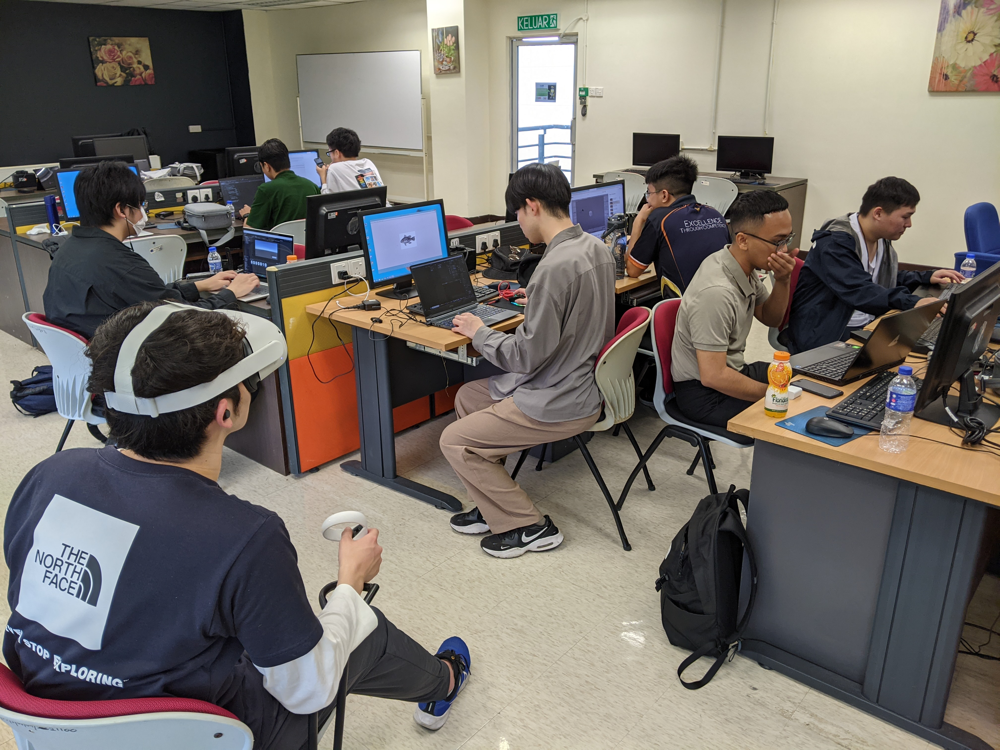
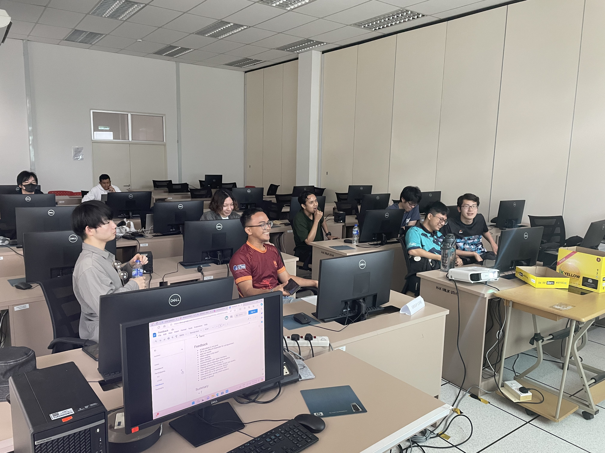
ゲーム制作・国際共同制作
マレーシアの協定校マラッカ技術大学（UTeM）の学生と共同で、SDGs の理念の普及と異文化交流を目的とした VR ゲームを制作しました。
社会貢献・Web AR
学校のキャラクターが避難経路を案内する、特別支援学校向けの Web AR アプリです。
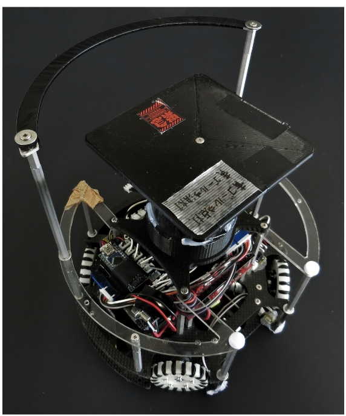
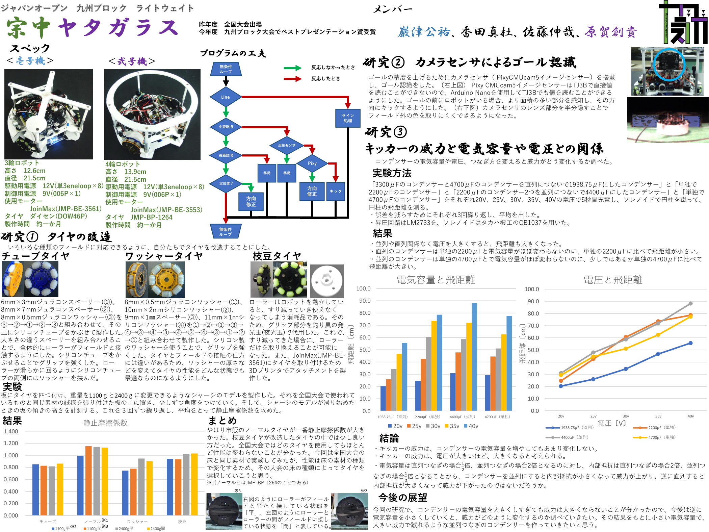
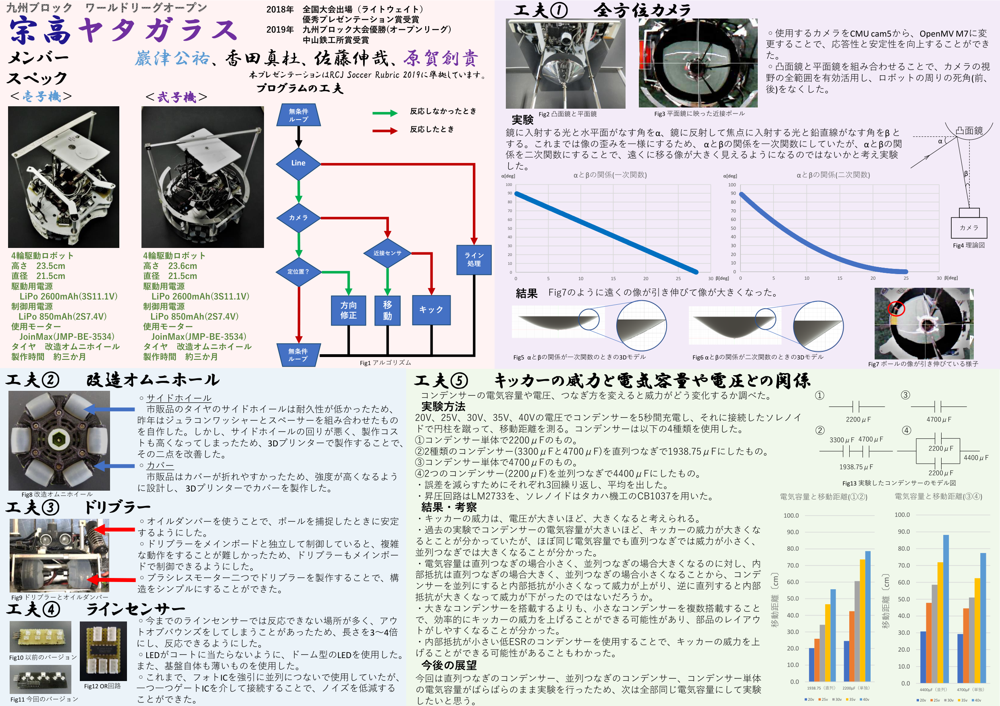
中学・高校・C/C++ / 回路設計
中学・高校の電気物理部で、自立して動くサッカーロボットをチームで製作し、大会に出場しました。
佐藤 伸哉
徳島大学大学院 創成科学研究科 理工学専攻
「モノづくり」が好きで、中学・高校のロボット製作から始め、大学では C言語でのネットワークゲーム、いまはチームでの商用ゲームの開発に取り組んでいます。自分が作ったものが、目に見えて動くところに面白さを感じています。
C / C++ / C# / Python
Unity 6 (URP)、HLSL シェーダー、DOTween、Unity Localization、Input System、Steamworks.NET、SDL2
Socket API（TCP）、Photon
Git・GitHub（PR での運用）、作業プランの文書化
Unity での VR、Web AR（8th Wall）
Arduino、回路設計（Autodesk Eagle）、3D CAD（Fusion 360）